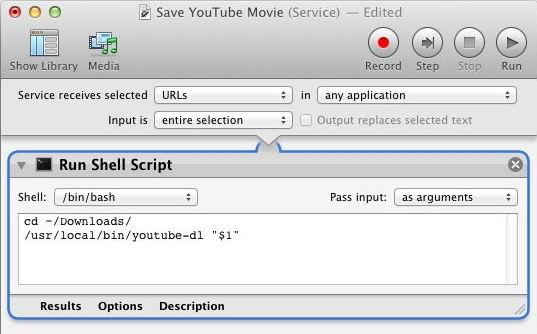

Download video+audio either single files or entire playlists. Supports YouTube, Vimeo etc.
Syntax
youtube-dl [OPTIONS] URL [URL...]
Options
-F, --list-formats List all available formats.
-f, --format FORMAT Video format code, see example below.
-i, --ignore-errors Continue on download errors, for example to skip unavailable
videos in a playlist.
--abort-on-error Abort downloading of further videos (in the playlist or the
command line) if an error occurs.
--no-playlist Download only the video, if the URL refers to a video and a playlist.
--yes-playlist Download the playlist, if the URL refers to a video and a playlist.
-a, --batch-file FILE File containing URLs to download ('-' for stdin.)
--restrict-filenames Restrict filenames to only ASCII characters, and avoid "&" and
spaces in filenames.
-w, --no-overwrites Do not overwrite files.
--write-description Write video description to a .description file.
--write-info-json Write video metadata to a .info.json file.
--write-annotations Write video annotations to a .annotations.xml file.
-q, --quiet Activate quiet mode.
--no-mtime Set the file last modified date/time to the download date/time.
--no-warnings Ignore warnings.
--console-title Display progress in console titlebar.
--sleep-interval SECONDS Number of seconds to sleep before each download.
-h, --help Print this help text and exit.
-U, --update Update this program to latest version. Make sure that you have
sufficient permissions (run with sudo if needed.)
--version Print program version and exit.
Above is a summary of the options, for a full list including network/proxy/filtering options, run youtube-dl --help
The files are downloaded to the current directory.
1) download youtube-dl and copy it to /usr/local/bin/
( If /usr/local/bin does not already exist, then create it with sudo mkdir -p /usr/local/bin )
2) download ffmpeg and copy it to /usr/local/bin/
Example
First list the available formats with -F
$ youtube-dl -F https://www.youtube.com/watch?v=VG1VVFfOnYQ 140 m4a audio only DASH audio 127k , m4a_dash container, aac @128k (44100Hz), 3.77MiB 141 m4a audio only DASH audio 255k , m4a_dash container, aac @256k (44100Hz), 7.57MiB *** 160 mp4 256x144 DASH video 113k , 12fps, video only, 3.24MiB 133 mp4 426x240 DASH video 269k , 24fps, video only, 7.27MiB 134 mp4 640x360 DASH video 272k , 24fps, video only, 6.55MiB 244 webm 854x480 DASH video 504k , 24fps, video only, 7.95MiB 135 mp4 854x480 DASH video 540k , 24fps, video only, 13.33MiB 136 mp4 1280x720 DASH video 1155k , 24fps, video only, 26.62MiB 248 webm 1920x1080 DASH video 1797k , 24fps, video only, 30.81MiB 137 mp4 1920x1080 DASH video 2750k , 24fps, video only, 57.97MiB *** 43 webm 640x360 18 mp4 640x360 22 mp4 1280x720 (best)
Using the codes on the left hand size, you can select a specific size of Video and Audio.
So in this example, we want 1080p video (137) plus 255K audio (141) so the command becomes:
$ youtube-dl -f 137+141 https://www.youtube.com/watch?v=VG1VVFfOnYQ
If you just want the highest possible quality, this is the default so all you need is:
$ youtube-dl https://www.youtube.com/watch?v=VG1VVFfOnYQ
By default the date/time of the downloaded file will be equal to the upload date/time to hopefully give an approximately correct date of the files creation, to disable this and return the downloaded date use the option --no-mtime
You can run youtube-dl directly from any web browser (or any other application) using OS X services and Automator.
Choose Applications | Automator and then create a new Service (click the Service icon.)
Set the drop-down lists as shown below, pass input 'as arguments'
The Shell script can just be two lines, one to cd change directory to where you want the movie saved, and the second to run youtube-dl passing the URL.With that done save the Automator Service with a suitable name like "Save Youtube Movie"

To run this, select any URL, in the web browser address bar, or even just a suitable url within a text document, then go to the services menu and select the name of your Automator service "Save Youtube Movie".
(Automator Services are automatically saved to ~/Library/Services/ )
“Make each program do one thing well.
To do a new job, build afresh rather than complicate old programs by adding new features” ~ Ken Thompson
Related:
rsync - Remote file copy